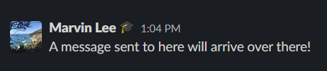
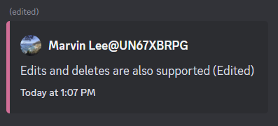
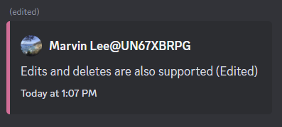

Slack to Discord Bridge
Purpose
This repository contains the source code for a Slack App that listens to a Slack Workspace public channels and forwards all of its messages and files to a Discord server as a back-up or archive.
Features
The following images show off common usages and subset of what the bot is capable of!
Basic Message Support


Message Edits and Deletions
 

Thread Support


Basic Set-Up
To start setting this project up, clone this repository and run npm install to install the dependencies required to run.
Next, follow the steps to Create a New Slack App and Create a New Discord Bot below.
Run npm run setup and enter the credentials from the Slack App and Discord Bot as well as some preferences. That way, the script can automatically configure and test its features.
Once set-up is complete, run node . and the bot will be live!
How to Create a New Slack App
Go to the Slack Developers page, log into the workspace you want to install your app, and click on Create New App > From scratch.
Give the app a name and select a workspace to run the app on.
On the Basic Information page, go to Add features and functionality > Event Subscriptions
Enable Events and verify the Request URL (the URL or IP address of the device this program runs on) with the node_modules/.bin/slack-verify script from Slack. How To
In the Subscribe to bot events section, subscribe the bot to the following events: message.channel and file_shared
In Basic Information > Add features and functionality > Permissions > Scopes, add channels:read for the User Token Scopes section.
For the Bot Token Scopes section (same page), add the scopes listed below in Bot Scope List and Usages
Scroll to the top or go back to Basic Information > Install your app and add your bot to your workspace!
You should now go to Basic Information > Add features and functionality > Permissions and see your OAuth tokens at the very top. You will need this to continue setting up the program later.
A Note About Verifying Your Slack App URL
To link up the Request URL to the Slack App, you will need to follow Slack's instructions.
To obtain a public URL or IP address, you will need to open up a port to the internet through port-forwarding or a service like ngrok.
Then run the script in node_modules/.bin/slack-verify with ./node_modules/.bin/slack-verify -s <SLACK_SIGNING_SECRET> and type the URL at the /slack/events endpoint in Add features and functionality > Event Subscriptions > Enable Events > Request URL
(Warning, if your URL changes you will have to do this step again. Ngrok Free Plan changes the url each time ngrok is restarted so keep it running in another terminal or the background at all times)
Discord Bot Set-Up
Go to the Discord Developers Portal and create a new bot
Find the Client ID in the General Information page and replace the braces in this url with it to invite it to the Discord Server you want to use with Admin permissions(Required): https://discord.com/oauth2/authorize?client_id={Client_ID_Goes_Here}&scope=bot&permissions=8
Next, go to the Bot page and reveal the TOKEN for the bot.
Optional: Customize the bot by giving it a name, profile picture, and description on the General Information page
Set-Up Complete! Now let's run it
At last, run node . and the Discord Bot and Slack App will both boot up.
Send a message to a Slack channel that the Slack App is in and watch the message appear on Discord as well!
Documentation
Documentation for this project's source code can be generated by running npm run jsdoc and viewed by running npm run jsdoc-serve. You can then read it at the URL displayed in the console.
Bot Scope List and Usages
- Obtaining A List Of Channels To Join:
channels:read - Joining Channels From A List:
channels:join - Receiving Messages From Slack:
channels:history - Receiving And Copying Files From Slack:
files:read - Looking Up The Sender Of Each Message:
users:read - Listening To Pins And Unpins:
pins:read